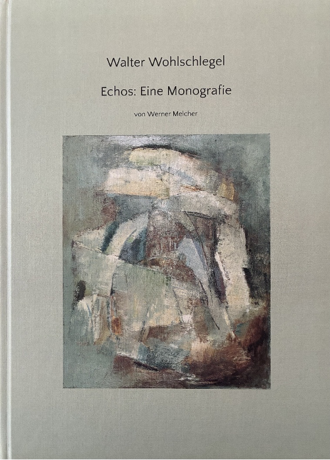

Kindheit und Lehrjahre
Kindheit, Ausbildung und erste künstlerische Erfahrungen.

Das Buch
Echos: Eine Monografie
Eine persönliche Annäherung an Leben und Werk des Malers Walter Wohlschlegel (1907-1999) anhand von über 120 farblich abgelichteten Bildern aus acht Jahrzehnten.
Hierbei sollen die enorme Bandbreite und Qualität seines Schaffens, welche auch für die Vielfalt der Kunst des 20. Jahrhunderts stehen, einem größeren Publikum nähergebracht werden. Parallel wird der Versuch unternommen, den Einfluss von Wohlschlegels humanistischen Ideale auf sein Oeuvre aufzuzeigen.
Die 121-seitige Hardcover Monografie kann direkt über den Autor zum Selbstkostenpreis von 25 Euro (zzgl. 5 € Versand) bezogen werden.
Interesse am BuchAus dem Buch
Echos: Eine Monografie
von Dr. Werner Melcher
Es war im März 2018, als ich das erste kleine Aquarell des mir bis dahin unbekannten Malers Walter Wohlschlegel in einer Internetauktion erwarb. Bei meinen anschließenden Recherchen zu dem Künstler stieß ich mit der Zeit auf mehr und mehr Werke und Informationen, die mich auf die Person und den Maler immer neugieriger werden ließen. So kontaktierte ich schon bald darauf das Grafik Museum Stiftung Schreiner in Bad Steben mit der Bitte, mir einen Katalog ihrer Wohlschlegelausstellung aus dem Jahr 2009 zukommen zu lassen.
Freundlicherweise wurde mir nicht nur meine Bitte von der Museumsleitung erfüllt, sondern darüber hinaus ein Kontakt vermittelt, der mir die Begegnung mit Wohlschlegels Nachlasserben ermöglichte. Bald darauf besuchte ich Wolfgang Wohlschlegel-Röhrer das erste Mal und es sollten noch weitere spannende Reisen nach Berlin folgen, bei denen ich die enorme Bandbreite von Wohlschlegels Schaffen bestaunen konnte. Da bereits nach meinen ersten Besuchen das Vorhaben immer deutlichere Konturen annahm, über den Künstler eine Monografie zu verfassen, wuchs auch das Entgegenkommen seines Sohnes, der mir seine volle Unterstützung versicherte. Auch ihm war in erster Linie daran gelegen, die Kunst Wohlschlegels in die Welt hinauszutragen und hierdurch einem Credo seines Vaters nachzukommen:
„Bilder werden blind, wenn man sie nicht anschaut.“
…
Lebensweg
Kindheit, Ausbildung und erste künstlerische Erfahrungen.
Ausbildung in Basel und die intensive Auseinandersetzung mit der modernen Kunst.
Eine prägende Lebensphase während des Zweiten Weltkriegs.
Nachkriegsjahre und weitere Entwicklung des künstlerischen Ausdrucks.
Eine weitere Station im Leben und Schaffen Wohlschlegels.
Späte Schaffensphasen und die Vielfalt des Werks bis ins hohe Alter.
Einblicke
Einige Doppelseiten aus der Monografie geben einen ersten Einblick in Aufbau, Gestaltung und Inhalt des Buches.
Leseprobe öffnenKontakt
Für Hinweise, Ergänzungen oder Fragen zur Monografie und zum Werk von Walter Wohlschlegel können Sie Kontakt mit dem Autor aufnehmen.